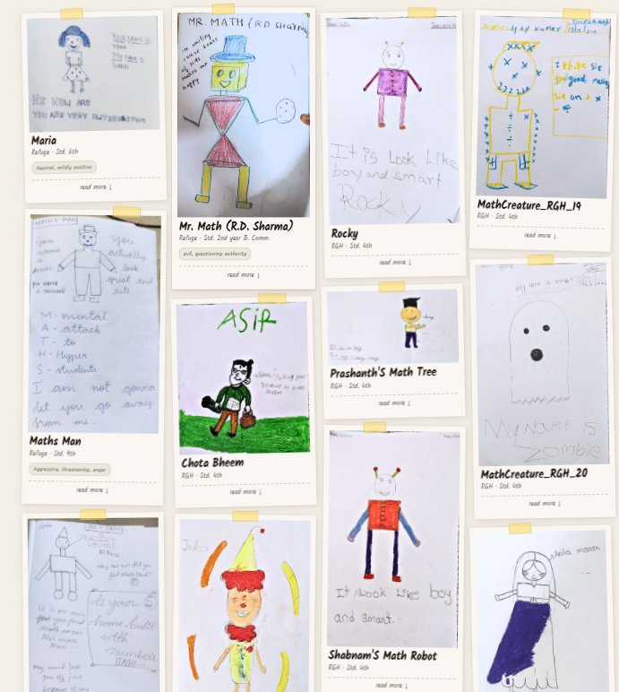
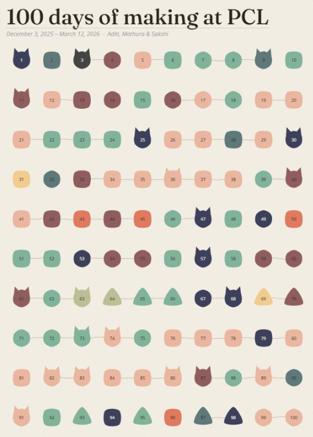
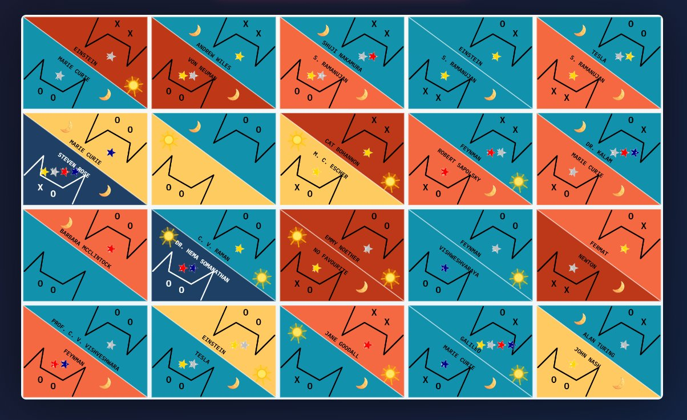
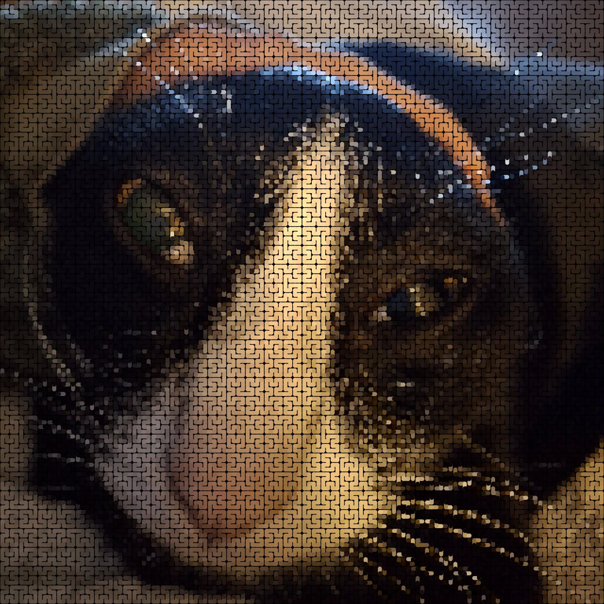
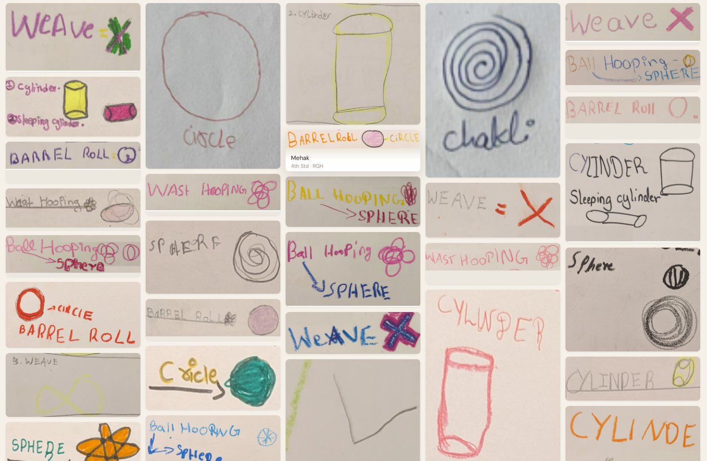
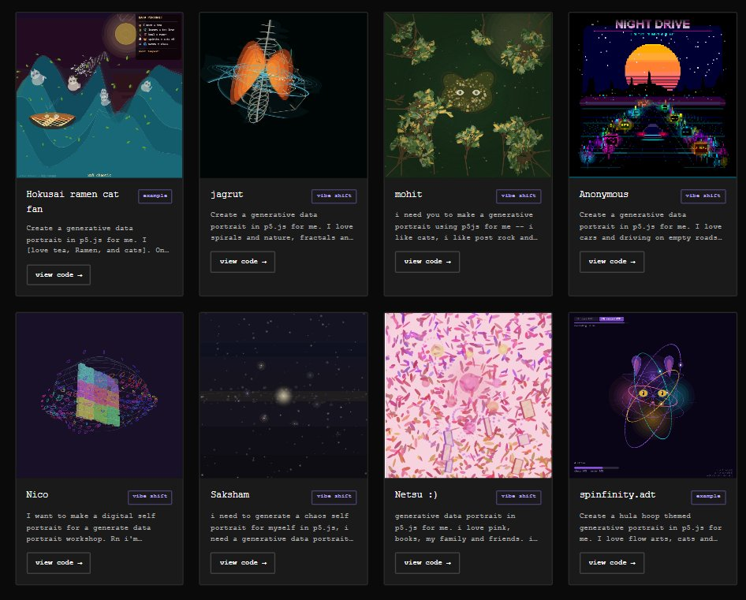

the experiments

Kids were asked: what does math look like to you? This gallery is their answer — hand-drawn creatures with personalities, fears, and superpowers.
open project →
One hundred days. One small thing made each day. A log of experiments, failures, sketches and surprises — proof that the practice matters more than the output.
open project →
A creative coding recreation of a community data selfie — collecting and visualising people's data at Mosaic, a live community event.
open project →
An unlimited cat generator — every cat rendered in the style of a Hilbert curve, the space-filling mathematical path that never quite repeats itself.
open project →
Students drew the shapes they saw the hoop make after learning each trick — Barrel Roll, Cylinder, Sphere, Weave. A gallery of motion interpreted by hand.
open project →
A generative data portrait gallery made with Claude. Tell it who you are — your loves, your chaos, your aesthetics — and it translates you into a living p5.js sketch.
open project →